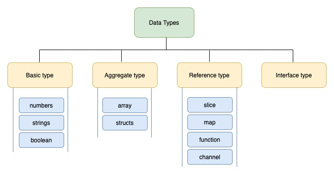

GO TEMEL(DEĞER) VERİ TİPLERİ

TEMEL(DEĞER) VERİ TİPLERİ
Değer tipleri veriyi tutan değişken türleridir.Referans türleri ise veri yerine verinin bellekteki adresini tutan değişken türleridir Go Programlama dilinde kullanılan Temel düzeydeki yani Değer Tipindeki veri tiplerini inceleyelim.
1-String
String'ler byte dizinidir.Karakter (Harf) dizinlerini yani kelimeleri,cümleleri tanımlarken kullandığımız veri tipidir.Go'dastring şeklinde yazılır. Referans tipteki bir veri tipi olmasına karşın temel düzeyde sıkça kullandıldığı için bu yazıda paylaşmak istedim
var mesaj string="Merhaba Dünya"GO'da stringlere değer ataması yapılırken "" (çift tırnak) işareti kullanılır.
2-Integer
Integer, tamsayıları belirtmek için kullandığımız veri tipidir. Integer'ın kısaltmasıint olarak tanımlanır.
Integer veri tipleri İşaretli(signed) ve İşaretsiz(unsinged) olmak üzere ikiye ayrılır. İşaret dediğimiz "- " değerini almamasıdır.
uint olarak işaretsiz integerlar tanımlanır. Bir değişkenin değerinin eksi olmayacağından eminseniz uint tipini kullanabilirsiniz.
Integerler int8,int16,int32,int64 || uint8,uint16,uint32,uint64 olarak tanımlanabilir. Buradaki sayılar 28 , 216 gibi boyutunu belirtir.
Örneğin int8 yani 256 bitlik bize -127 ve +127 arasındaki tam sayıları tutmamızı sağlar.
Buradaki 1'lik bit fark sayının işaretini tutmak için kullanılmıştır.
İşaretsiz integer'da ise 0-255 arasındaki değerler tutulmaktadır. Aynı mantık int16,int32 içinde geçerlidir.
var sayi8 int8 = 127Tabii biz Go dilinde yazarken, eğer çok büyük bellek tüketimine sahip bir program yazmıyorsak,sadece int yazarak geçiyoruz :)
var sayi16 int16 = 32767
var sayi32 int32 = 2147483647
var sayi64 int64 = 9223372036854775807
3-Floating-Point
Float tipi integer değerlerini yetersiz olduğu yani ondalıklı basamak gösterirken kullanımız bir veri tipidir.Float32 ve Float64 olmak üzere iki türü vardır.Go'dafloat32 veya float64şeklinde yazılır. float32: 32bitlik float sayılar
float64: 64bitlik float sayılar
var piSayisi float64=3.14285714286Türkiye'de küsüratlı yani ondalık gösterirken , (virgül) kullanılırız. Ancak Programlama dillerinde "İngiliz-Amerikan" ayrıma biçimi olan . (nokta) kullanılır.
4-Boolean
Boolean veri tipleri mantıksal sonuç çıkarmada kullanılır.Doğru yanlışı ifade eder. True - False değerlerini tutar.1 bit'lik veri tutar.Go'da diğer dillerden farklı olarak Boolean veri tiplerini 0-1 olarak düşünmemiz gerekiyor.boolean olarak kullanılır.
var dogruMu boolean=false
5-Complex
Int ve Float kadar çok ihtiyacınız olmasa da Gocomplex64 ve complex128 adında iki karmaşık sayı tipini de sunuyor. İlki gerçek kısım için bir float32 kullanıp, kalanı sanal kısma ayırırken, ikincisi gerçek kısım için float64 kullanıyor.
var karmasikSayi complex64GO'da stringlere değer ataması yapılırken "" (çift tırnak) işareti kullanılır.
d = 4 + 5i
6-Byte
bayt veri türü, işaretsiz bir 8 bit tam sayıyı temsil etmek için kullanılır. Bir bayt veri türü varsayılan olarak sıfırdır.Go'dabyte şeklinde tanımlanır. var yeniByte byte=12byte veri tipi,değer olarak verilen harfleri ASCII kodu karşılığındaki sayıyı da verir.
var asc2Kod byte='t'